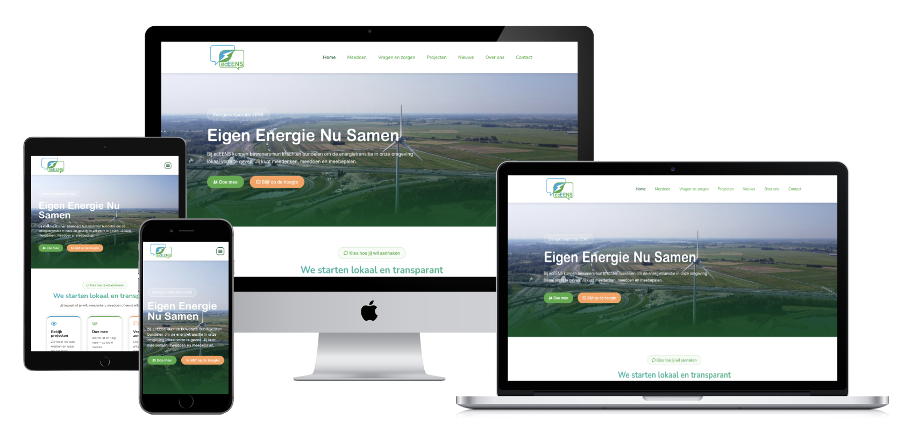

Case
EC EEns
Voor EC EEns ontwikkelde ik een nieuwe website voor een lokale energiecooperatie in Stichtse Vecht. Het doel: veel informatie, projecten en bewonersverhalen logisch structureren voor bezoekers en beheerders.

Vraag
Veel informatie beheren zonder dat bezoekers verdwalen.
Bezoekers moeten snel kunnen kiezen wat voor hen relevant is: meedoen met de cooperatie, investeren in lokale energieprojecten of nieuwe ontwikkelingen volgen. Daarom is veel aandacht besteed aan duidelijke routes, rustige vormgeving en laagdrempelige teksten.
Naast de gewone pagina's is een schaalbare structuur ingericht voor projecten, nieuws, bewonersverhalen, artikelen, maatregelen en kennisgroepen. Beheerders kunnen deze onderdelen zelf toevoegen, ordenen en aan elkaar koppelen.
Templates zorgen ervoor dat nieuwe artikelen en verhalen automatisch netjes worden vormgegeven. Zo kan EC EEns zonder technische kennis content plaatsen, terwijl de site overzichtelijk en consistent blijft.
- Ontwerp en bouw van de WordPress-website.
- Informatiearchitectuur en gebruikersroutes.
- Beheerstructuur voor verschillende soorten content.
- Templates voor artikelen, bewonersverhalen, projecten en kennisgroepen.
- Uitgelichte homepage-content eenvoudig zelf beheren.
- Dynamische overzichtspagina's voor projecten, nieuws en kennis.
- Gebruikersrollen en afgeschermde beheeronderdelen.
- Nieuwsbriefinschrijvingen netjes gekoppeld aan de beheeromgeving.